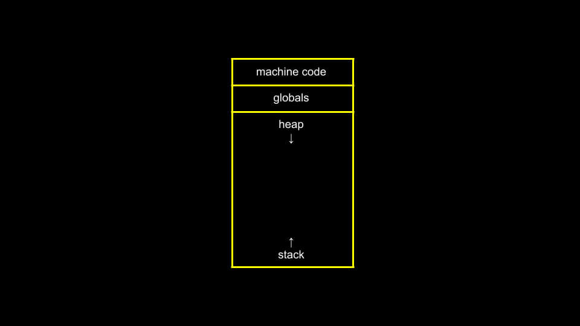

CS50x - Lecture 4 - Memory.
hexadecimal, pointers, and memory
I'm back to CS50 after a short break. This week I'll be going over Lecture 4 on Memory. My plan is to stick to 2 computer science blogs a week (a lecture and problem set), and keep writing on other subjects, feelings, and projects I have as well. Without further ado, lecture 4.
Hexadecimal
This week's lecture starts with an overview of hexadecimal, specifically as a function of RGB values for pixels. The word hexadecimal consists of hexa- (hex), which is Greek for six, and -decimal, which is Latin for ten. A bit confusing mixing Greek and Latin, but oh well. Funny sidenote, Latin for six is sex, so in Latin it'd be a sexidecimal. Hexadecimal is a base-16 system, where we count up to 16 (or 15 + 1 for the zero) with a single digit. The digits are:
0 1 2 3 4 5 6 7 8 9 A B C D E F
Where A represents 10, B 11, C 12, and so on.
Hexadecimal is especially useful for computers that process data in bytes. If we remember from earlier lectures, a byte, or 8-bits, can store up to 28 or 256 values, minus 1 for the 0 equals the number 255. If we put two hexadecimals together, we get 16x16 values, which equals 256, minus 1 for the 0, or 255 as well. So, in hexadecimal, 00 = 0, 0F = 15, 10 = 16, and FF = 255.
You've probably seen an RGB value in hexadecimal, which is has a hash symbol followed by 6 letters/numbers, for example #FFFFFF is the color white. This hex code is actually 3 different numbers, which represent the RGB values, FF FF FF, tells the computer to display 255 Red, 255 Green, and 255 Blue, which is white. Conversely, #000000, or 00 00 00, is black.
The advantage of using hexadecimal (especially in web development and colors) is the ability to display lots of data more succinctly. #FFFFFF in hexadecimal would be 111111111111111111111111 in binary!
Memory
As we saw in Lecture 2, we can picture a computer's memory like a grid of bytes. Something like this:

And for each byte, the computer assigns a number as an address, typically in hexadecimal notation. The convention for displaying a hexadecimal number is to prefix it with 0x. For 10 in decimal is 10, but in hexadecimal 10 = 16. To make this clear, we'd use 0x10, which means hexadecimal 10 = 16.
In C, we'll learn 2 new operators today:
- & provides the address of something stored in memory
- * tells the compiler to go to a memory address
Pointers
A pointer is a variable that stores the address in memory of another value. Pointers are usually stored in an 8-byte value, which provides enough space to point to any byte in the billions of bytes computers now have access to.
Up to this point in CS50, the CS50 library has provided some "training wheels" so to speak, or simplifications to help us code easier. One of these was the string variable. In C, string is not a data type, rather, it's an array of characters. A string, is actually just the address of the first character in memory, or char *. The variable doesn't know how long the string is per say, rather, the string itself tells the computer when to stop by ending in a NUL character '\0' whose bits are all 0. So a string is just a pointer to the first character in a string (or array) of characters.
This raises an interesting problem for comparing two strings. Because a string isn't literally a word, rather the address to a word, we can't compare it like we would integers, with ==, <, >, etc. If we compare 2 strings, we'd just be comparing the address of 2 different bytes, so it'd always show up as different. Instead we'd use a useful function already built for us from the <string.h> library called strcmp( ) which returns 0 if both strings are the same, and a positive or negative number depending which one comes first ASCII-betically (according to the ASCII codes).
Similarly, for copying, if we just try to use the = operator, we'd simply be copying the address of the string, not the string itself. To solve this, we'd create a new string (while making sure to allocate enough memory for it - which would be the length of the string + 1 for the '\0' terminator character), then we can copy each character over in a loop, or just use the strcpy( ) function.
Another thing to always keep in mind is error checking. When allocating memory, a special NULL character (different from NUL) is assigned when the memory the pointer leads to is empty. Before trying to access any memory, we should always check if it's NULL or not.
Malloc and Valgrind
We say a computer is leaking memory when a program allocates the memory for something, but doesn't free it after. So the computer's operating system can't reassign it, and we start running out of memory. In C, which requires the programmer to be very conscious of the program's memory use, we assign memory with malloc( ), and for everything we assign, we must free with free( ).
Valgrind is a program we can use to check if our code is leaking memory. Valgrind will throw an error if we do something wrong specifically related to memory. For example, accessing out-of-bounds memory or leaking memory.
Garbage values
When assigning memory, there's no guarantee that it will be empty. Computers have a limited amount of memory, and so they reuse what they can after it's done being used. If we allocate some memory that's been used before but don't assign a specific value to it, it may still contain the old value, which we call junk or garbage values.
Scope
Next, we learn about the scope of variables and functions as relates to memory. A common problem is the need to swap values. To do this, we could create a function to swap two variables. Let's see an example:
void swap(int a, int b);
int main(void)
{
int x = 1;
int y = 2;
printf("x is %i, y is %i\n", x, y);
swap(x, y);
printf("x is %i, y is %i\n", x, y);
}
void swap(int a, int b)
{
int tmp = a;
a = b;
b = tmp;
}
This code will run, but it won't work. The values of x and y stay the same after passing them through the swap( ) function.
This is a problem of scope. The variables declared in the main function only have the scope of that function. Each function has a different frame or area of memory that's allocated for it.
In the above code, the arguments were passed by value or passed by copy, which means a copy of the value was created in the swap( ) function. But those values disappear when the function terminates. Instead, to update the value in the main function, we need to pass by reference. Instead of giving it a value to make a copy, we can give the swap( ) function the addresses or pointers to the values of a and b, and then the computer will know where to make the changes to the actual variables we want. That looks like this:
void swap(int *a, int *b);
int main(void)
{
int x = 1;
int y = 2;
printf("x is %i, y is %i\n", x, y);
swap(&x, &y);
printf("x is %i, y is %i\n", x, y);
}
void swap(int *a, int *b)
{
int tmp = *a;
*a = *b;
*b = tmp;
}
Notice the difference with the pointers. We're telling the computer to go to the value of a and b, and then change them.
Heap and Stack
The last thing I want to talk about is the heap and the stack. There are conventions to how computer memory is laid out, which can be illustrated as follows:
Generally speaking, the computer reserves the top of its memory for the machine code, then the global variables below that, then the heap which grows downward, and finally the stack which grows upwards.
When you use malloc to ask the computer for memory, it comes from the heap memory. Functions and variables use stack memory. When we call a new function, it creates a new frame on the stack, on top of the function(s) we're using below it. When that function finishes, it's essentially forgotten by the computer and the memory is freed to be used for something else.
Of course, if heap memory grows down, and stack memory grows up, they may eventually run into eachother, which is what we call a buffer overflow. Heap overflow is when we overflow the heap. Stack overflow is when we call too many functions and overflow the memory available.
User input
A quick note on user input. When prompting the user for input, specifically strings, but possibly other values as well, we don't really know what they'll enter or how long it will be. We may try to pre-allocate enough memory, but even still, the input may exceed the bounds of the assigned memory and we get a segmentation fault. So strings and user inputs can create errors that make our code unsafe for use.